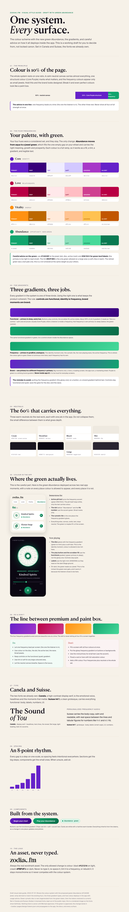
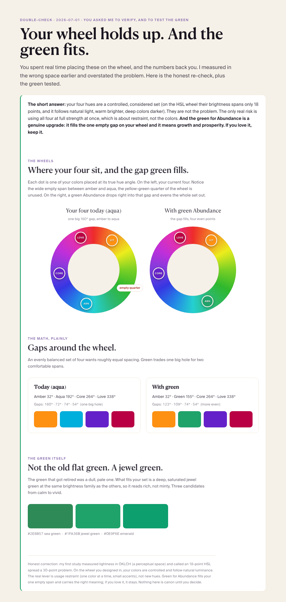
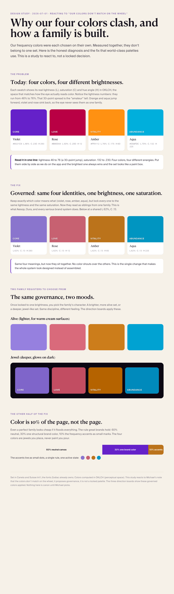
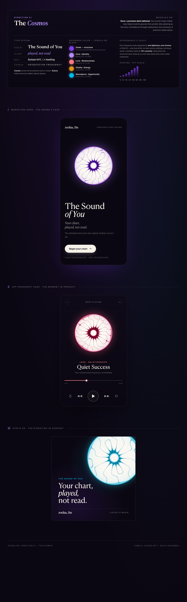
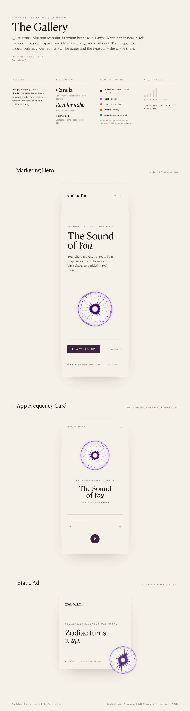
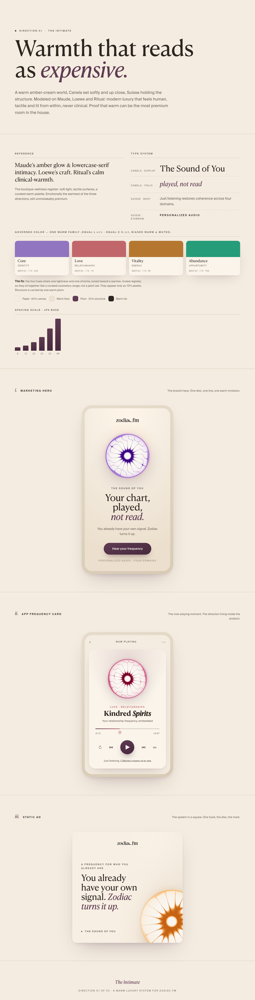

Stepping the whole system up to world-class.
You asked to level up the look: fonts, how we use color, spacing, premium but not AI, consistent across app, pages, ads, content. This is the answer as a choice, not a lock. First the color fix you flagged, then three complete directions, each modeled on a world-class brand and shown on the same three surfaces so you compare the system, not the content. All of it is set in Canela and Suisse, the premium fonts you already own (the site currently ships free substitutes; that alone is a big step up).
The color question, re-checked honestly.
Correction after you pushed back: you were right. On the HSL wheel you actually designed in, your four colors are a controlled, considered set (brightness spans only 18 points, and it follows natural light). My first study measured in a different space and overstated it. Your hues are not the problem; using all four at full strength at once is, and that's about restraint. The wheel re-check is here, and it also shows your green Abundance fills the one empty gap on your wheel and fits beautifully. The study below still holds for one thing: whatever the hues, keeping them to a shared brightness and using them as 10% accents is what reads premium.
{kind=link}
The full professional style guide is here: the color scheme with the green Abundance, all three gradients, and careful advice on how color deploys in the app. That's the document to decide the color system from.
{kind=link}
Explained simply (treat me like I'm 12): how the colors share a page without going loud, when to use each gradient, secondary colors, and how the blobs and waves are made. And the fun one, a live animated visualizer: the music rays pulsing on beat in all four colors on black (open it and watch; it doubles as a YouTube/app asset).
{kind=link}
{kind=link}

{kind=link}

{kind=link}

Pick a direction. Or mix.
Each is a full system on one page: the reference it models, the type, the governed color, the spacing, and the same three Zodiac moments (a marketing hero, an in-app card, a static ad) so the consistency across surfaces is visible. Tap any board for the full image.
The sound made visible. Near-black cosmic ground, the cymatic disc glowing as a jewel, Canela in cream for the soul and Suisse for structure. The frequency hues become one luminous family on dark. The richest, most dramatic option. Look first at the hero: the violet disc floating with a soft halo over deep black.
{kind=link}

Quiet luxury on warm paper. An art book and a gallery wall label: enormous calm space, Canela set large, near-black ink, the frequencies reduced to tiny governed marks. The calmest, most editorial option; premium because it is quiet. Look first at the in-app card, proving the restraint works inside the product.
{kind=link}

Warm, tactile, human luxury. A warm amber-cream world lit from within, Canela set softly and up close, warmth itself reading as expensive. The warmest, most approachable option, and the one that pushes the color fix furthest into a single harmonized warm family. Look first at the rose "Kindred Spirits" app card.
Tradeoff to weigh: biasing the whole palette warm shifts Abundance from aqua toward green, which you'd retired. Warm family, yes; we can keep Abundance blue if you want the warmth without the green.{kind=link}

What I need from you
- The color governance: yes to locking the four colors to one brightness/saturation as a family? (This is the biggest single upgrade and it feeds every direction.)
- A direction to build from: Cosmos, Gallery, or Intimate, or "Cosmos hero energy with Gallery's calm on content," whatever mix you feel.
- The fonts: commit to Canela + Suisse as the real system? (You own them; I'll sort the web-licensing path for the live site.)
Once you pick, that direction becomes the one Design Kit that governs everything, app, pages, ads, content, so the whole brand finally looks like one thing.